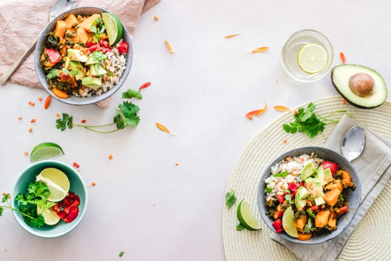

Como comentado anteriormente, a dieta vegana possui todos os nutrientes que nosso corpo precisa. Para que você entenda que pode viver a base de plantas é fundamental que você entenda que uma alimentação vegana não é apenas salada. Ao deixar as carnes, leites e ovos de lado no seu cardápio, você se obriga a consumir mais alimentos integrais e suas substituições nutritivas ganham a forma de grãos integrais, frutas, legumes, feijões, ervilhas, nozes e sementes. Assim, vários estudos relataram que as dietas veganas tendem a fornecer mais fibras, antioxidantes e compostos vegetais benéficos. Eles também parecem ser mais ricos em potássio, magnésio, folato e vitaminas A, C e E.
A dieta vegana possui níveis baixos de colesterol e gorduras saturadas, e como resultado, os riscos de entupimentos de veias e artérias, que podem causar infarto, são diminuídos. Além disso, ao adotar a alimentação vegetariana, você tende a diminuir o consumo de sódio, que contribui para doenças cardíacas.
Os veganos possuem maior sensibilidade à insulina e até 50-78% menor risco de desenvolver diabetes tipo 2. Estudos relatam que dietas veganas reduzem os níveis de açúcar no sangue em diabéticos mais do que as dietas da Associação Americana de Diabetes (ADA), American Heart Association (AHA) e National Cholesterol Education Program (NCEP). Além disso, outros estudos relatam que os diabéticos que substituem a carne por proteína vegetal podem reduzir o risco de insuficiência renal. Mais estudos relatam que uma dieta vegana pode ser capaz de fornecer alívio completo dos sintomas de polineuropatia distal sistêmica – uma condição em diabéticos que causa dor aguda e ardente.
sso mesmo, embora ainda não seja possível curar um câncer, a dieta vegana é capaz de reduzir os riscos de alguns casos da doença. Estudos mostram que comer legumes regularmente pode reduzir o risco de câncer em cerca de 9 a 18%. E ao comer pelo menos sete porções de frutas e vegetais frescos por dia, você pode reduzir o risco de morrer de câncer em até 15%. A partir desses dados, e sabendo que veganos tendem a se alimentar mais de frutas, legumes e verduras, podemos explicar por que uma recente revisão de 96 estudos descobriu que os veganos podem se beneficiar de um risco 15% menor de desenvolver ou morrer de câncer. Dentre os cânceres que podemos diminuir as chances de risco, temos o câncer de próstata, o câncer de colo e o câncer de mama.